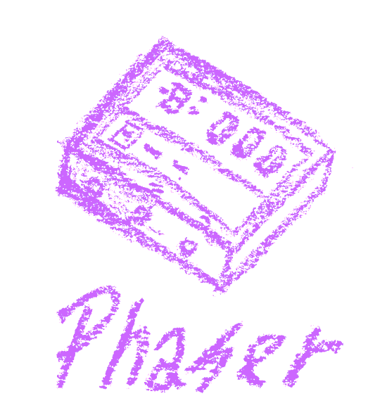
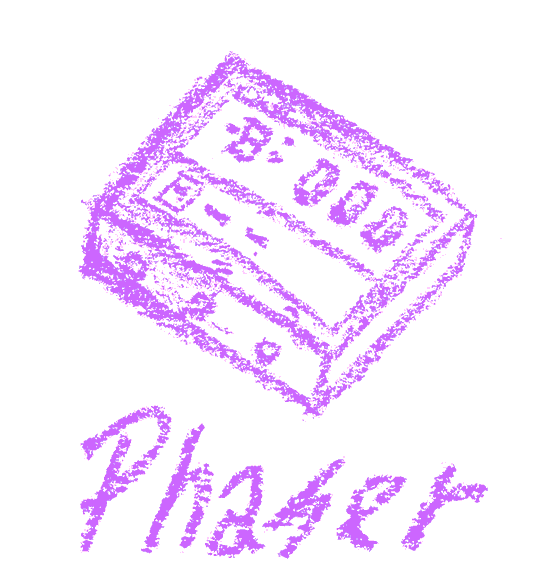
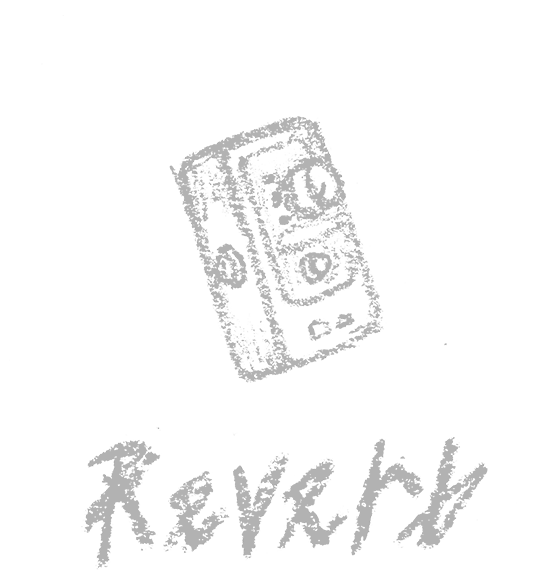
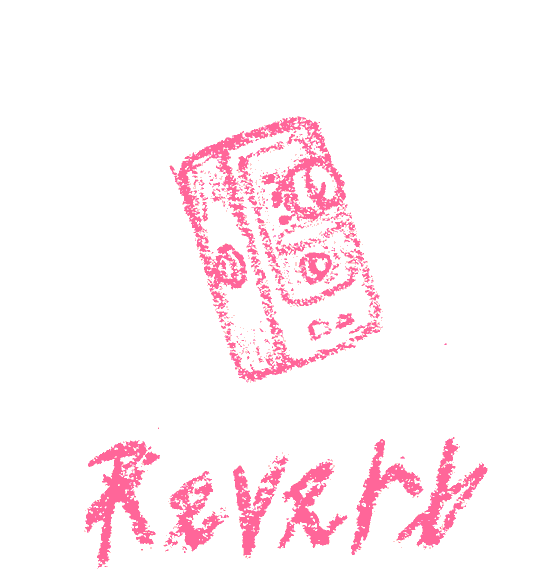
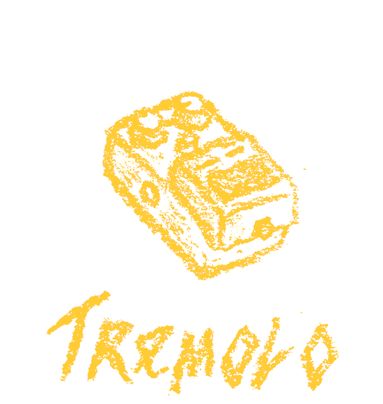

Chromatones v1.0
an illustrated and animated effect units (pedals) web dashboard.
instructions:
hover over each each illustration to enable each effect unit animation and display its animation and correspondent sound.
the button ‘try chaos’ toggles all units at the same time.
the button ‘clean guitar’ plays a clean version of the guitar riff audio file processed through each unit.
chromatones is a web experiment designed by vitor meuren and coded by vitor carvalho.